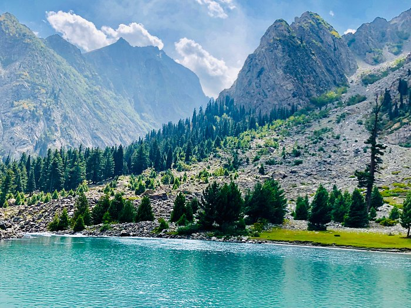
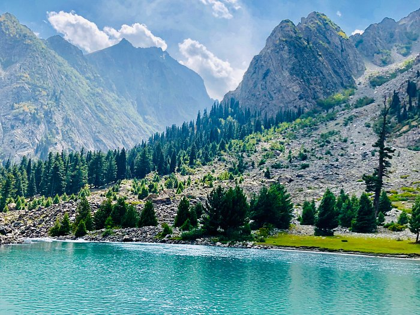

Swat District is centered on the Valley of Swat, usually referred to simply as Swat, which is a natural geographic region surrounding the Swat River. The valley was a major centre of early Buddhism under the ancient kingdom of Gandhara, and was a major centre of Gandharan Buddhism, with pockets of Buddhism persisting in the valley until the 17th century, after which the area became largely Muslim. Until 1969, Swat was part of the self-governing princely state of Swat, that was inherited by Pakistan following its independence from British rule. The region was seized by the Tehrik-i-Taliban in late-2007 until Pakistani control was re-established in mid-2009.
The average elevation of Swat is 980 m (3,220 ft),resulting in a considerably cooler and wetter climate compared to the rest of Pakistan. With lush forests, verdant alpine meadows, and snow-capped mountains, Swat is one of the country's most popular tourist destinations.
 
